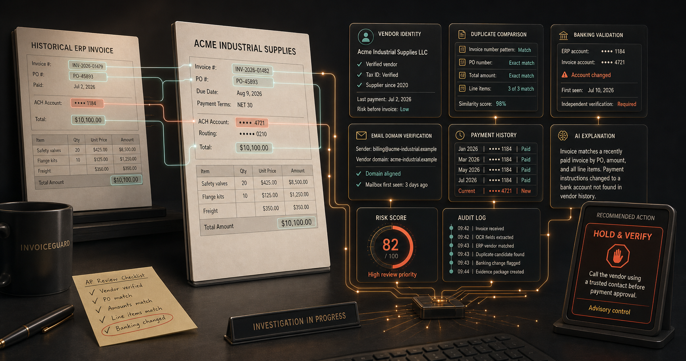

Duplicate and near-duplicate invoices
Compare invoice numbers, amounts, purchase orders, line items, document fingerprints, and prior payment status.

Operations Intelligence
Catch risky invoice activity before payment approval.
Analyze invoice documents, vendor records, payment changes, and available workflow evidence. Give finance teams a clear risk assessment, confidence level, and recommended next action before money moves.

Before payment approval
InvoiceGuard sits beside accounting, procurement, and payment systems as an advisory control layer. It prioritizes exceptions without turning every invoice into a manual investigation.
How it works
InvoiceGuard structures the document, resolves the vendor, checks historical and payment evidence, and produces an advisory recommendation your finance team can inspect and route.

Focused controls
The first InvoiceGuard release is deliberately narrow. It emphasizes defensible controls, clear evidence, and manageable review workload instead of claiming to be a general fraud platform.
Compare invoice numbers, amounts, purchase orders, line items, document fingerprints, and prior payment status.
Show a masked old-versus-new comparison and require verification through a previously trusted vendor contact.
Surface identity differences, unfamiliar domains, and incomplete vendor baselines in finance-friendly language.
Compare the current invoice with available vendor history while keeping low-confidence cases out of the clean queue.
Evidence before automation
A score alone is not enough. InvoiceGuard connects each recommendation to vendor records, invoice history, banking evidence, extraction confidence, and an auditable review path.

A safer verification path
When payment details change, InvoiceGuard is designed to compare the submitted account with the current trusted vendor profile and direct reviewers to a previously verified contact channel.
Compare the current invoice with verified vendor and payment history.
Explain every material difference with source-linked evidence.
Verify using a known-good contact, not details supplied only by the new invoice.
Record the reviewer, outcome, evidence, and policy decision in the audit trail.

In development
InvoiceGuard is being designed to recommend Clean, Review, Hold, or Escalate while finance teams retain final decision authority. Direct payment blocking will require an explicit, approved customer workflow.
Design partners
We are speaking with accounts-payable, controller, finance-operations, procurement, and internal-audit teams about real review patterns, integrations, and evidence requirements.